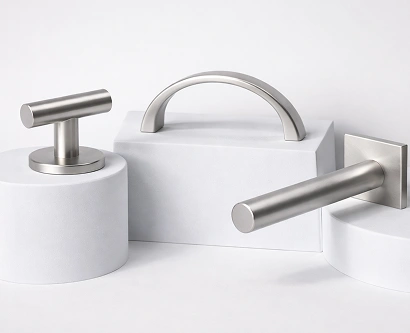

5.05.2026
~1 мин
~1 мин
Российские ученые разработали дверную ручку с антиковидным эффектом
Российские ученые придумали, как обеззаразить дверные ручки. Разаработка принадлежит команде стартапа из Российского университета дружбы народов (РУДН). Как уточнили в пресс-службе Национальной технологической инициативы (НТИ), специалисты предложили оснастить дверные ручки ультрафиолетом, благодаря чему уничтожаются до 96% бактерий и вирусов, находящихся на ее поверхности. При этом на обеззараживанрие требуется всего 2,5-3 секунды.
Читать